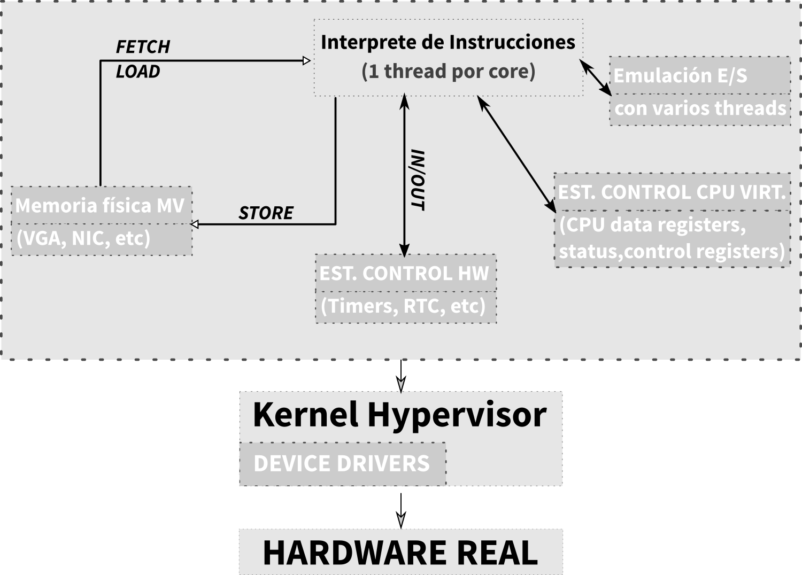
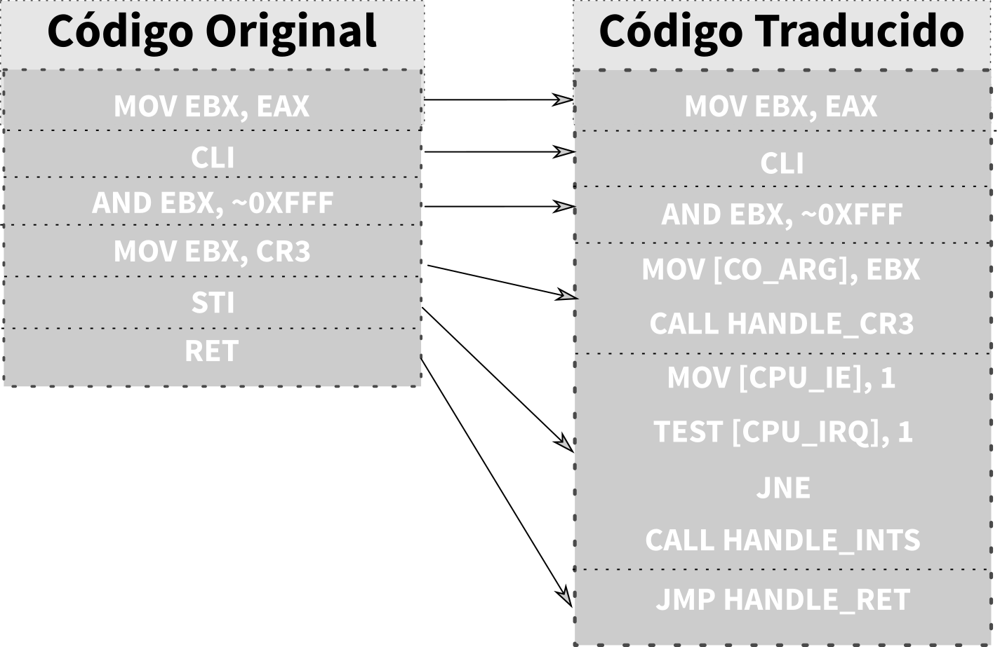

Virtualización de los recursos HW
Implementación de la CPU con el hipervisor
Todas las implementaciones que se mencionan a continuación son transparentes. Existen otras formas de conseguir virtualización, como puede ser la paravirtualización, pero no cumplen el hecho de ser transparentes pues se necesita el código fuente.
Emulación (CPU real y virtual distintas)
Un CPU es un sistema del cual conocemos su máquina de estados (sabemos tal y como se comporta), por tanto sabemos como emularlo.
Por ejemplo, podemos emular una CPU basada en RISC con una máquina de intel. Quizás el tiempo de ejecución puede ser peor, pero nos permite tener algo funcional (en el campo profesional es posible realizar emulación a nivel de transistor).
Virtualización nativa (CPU real y virtual idénticas, o con el mismo conjunto de instrucciones)
Es mejor caso que en la emulación, pues es posible que no todas las instrucciones tengan que ser emuladas, sino que deberían de ser mapeadas.
Traducción Binaria
Se realiza la traducción en tiempo de ejecución. Las instrucciones de la CPU se analizan y precompilan para traducirse a un código que sea seguro para la CPU real sin instrucciones privilegiadas y que incluye código de emulación por software del hardware de E/S virtual.
A pesar de que la traducción puede llevar cierto tiempo adicional, el código traducido puede ejecutarse indefinidamente.
Trap & Emulate
Los principios son los mismos que en el paper de Popek y Goldberg.
Se deja ejecutar a la CPU real el código de la CPU virtual pero en modo no privilegiado.
Cuando utiliza instrucciones privilegiadas, genera excepciones en la CPU real que debe emular por software.
El modo privilegiado de la CPU virtual es emulado por software para que el kernel virtual no tenga privilegios sobre el hardware real.
El sistema guest posee una tabla de interrupciones tal y como el sistema operativo host, pero no es "real", decimos que son estructuras "shadow".
El sistema operativo host, conoce esta tabla pues cuando se quiere generar necesita de modo privilegiado, haciendo pues saber al hipervisor de esta estructura.de esta estructura.
Es posible que no sea virtualizable en el sentido clásico (ej. Intel x86), pues puede tener efectos distintos entre el modo usuario y el supervisor., pues puede tener efectos distintos entre el modo usuario y el supervisor.
Además tantas traps producen mucho overhead. Y el hipervisor debe emular por software gran cantidad de estructuras shadow.
Para intentar paliar este overhead, se crea un modo pseudo-supervisor que simula la CPU virtual en modo privilegiado pero sin privilegios sobre el hardware real.

Runtime Binary Translation
Se posee el código binario, se localizan las instrucciones críticas y se sustituyen por alguna rutina que el hipervisor controle. Un ejemplo puede ser la instrucción HALT. Este sería cambiado por una rutina que se ejecutará en modo no privilegiado pero que simulará el modo privilegiado de la CPU virtual. Esto no es siempre posible puesto que algunos códigos que se auto-modifican o se auto-referencian (cargan datos de la zona de código) hacen muy dificil su traducción. En general, esto no suele ser posible, pues es un gran problema para la seguridad. La traducción se produce al tener una interrupción, concretamente con las interrupciones de página.

Implementación de los recursos hardware virtuales
Virtualización de la CPU
Se realiza una simulación de la CPU virtual mediante técnicas software o soporte hardware. Es decir, con las técnicas vistas anteriormente. En todos los casos se debe simular un modo privilegiado para la MV y otro modo para el hipervisor.
Para poder realizar esta virtualización es común el uso de shadow registers.
Estas son estructuras de control para ocultar los reales.
Multiplexación de la CPU entre MVs
Puesto que muchos servidores están inactivos casi todo el tiempo, se realiza una planificación de la CPU de tipo round-robin.
Eso, con las máquinas virtuales se traduce a:
- El S.O. invitado detiene la CPU cuando no está en uso.
- El hipervisor detecta la instrucción HALT y aprovecha para pasar el control a otra MV.
- Si una MV no bloquea la CPU en un lapso de tiempo, se producirá una interrupción de su ejecución para pasar el control a otra máquina.
Además, el hipervisor puede tener políticas para controlar el reparto del tiempo de CPU entre máquinas virtuales. Esto puede generar tiempos de espera "inexplicables" cuando el hipervisor planifica otra máquina virtual.
Virtualización de la RAM
Para el manejo de la RAM la máquina virtual debe de simular dos recursos hardware: el espacio físico de memoria y la unidad de gestion de memoria (MMU) del procesador.
Además se debe de controlar el uso de la memoria física por parte de las máquinas virtuales. Es decir, controlar el acceso (permisos, validez, presencia, swapping) y la traducción por páginas (se posee libertad para asignar memoria no continua a cada máquina virtual y no asignar las páginas no usadas).
Por tanto existiran dos MMUs: una para cada máquina virtual y otra real en el hipervisor.
Paginación virtual
Se pueden distinguir dos niveles de traducción.
- Dentro de la máquina virtual: Del
Espacio Logico Virtual (ELV)→Espacio Fisico Virtual (EFV) (S.O. Invitado). - En el hipervisor: Del
Espacio Fisico Virtual (EFV)→Espacio Fisico REal (EFR) (Hipervisor)
La MMU (Memory Management Unit) se puede implementar con simulacion por software o con soporte hardware.
Simulación Software (Shadow Page Tables)
Las instrucciones que programan las MMU virtual son interceptadas y se programa la MMU física con la traducción directa ELV → EFR.
Se requiere interceptar todo el acceso del S.O. invitado a la MMU emulada y guardar dos versiones de la TP (la del S.O. invitado, para su gestion, y la del hipervisor).
Este segundo set esta oculto (shadow) para las MVs. Se deberá detectar todo tipo de cambios, tales como modificaciones del PTBR (context switch), invalidaciones de la TLB, creación de páginas, modificaciones de las TP, etc.
Esto supone un overhead de memoria y proceso.
Soporte Hardware (Nested paging/Extended page table)
La MMU se encargar de traducir de ELV a EFV.
Existe un segundo nivel de hardware de la MMU que traduce las referencias de EFV a EFR.
El S.O. invitado programa las tablas del primer nivel. El hipervisor gestiona las tablas del segundo nivel de traducción.
La TLB se encarga de hacer caching de la traducción final de ELV a EFR.
Multiplexación e la RAM del hipervisor entre MVs
Debido a la localidad, muchos sistemas solo acceden a una parte de su memorias RAM durante un periodo de tiempo.
El hipervisor controla la memoria en uso (accedida) dentro de cada máquina.
Inicialmente la máquina va creciendo conforme usa su memoria RAM de sus bancos de RAM (asignación bajo demanda).
El hipervisor controla qué memoria continua usándose al cabo de un rato dentro de la MV ("working set" de la MV).
Es por ello que la suma de la RAM en uso de todas las MVs puede exceder la RAM del sistema físico (overcommiting).
Si se agotara la RAM libre del hipervisor se puede liberar memoria no usada de una máquina para concederla a otra.
El contenido de una página ya en uso se guarda en un fichero swap privado para cada MV.
El swap del hipervisor es invisible al S.O. invitado (puesto que sigue creyendo que sus páginas estan en RAM).
El hipervisor tambien permite definir políticas para controlar el reparto de la RAM entre máquinas virtuales.
Virtualización de Discos
La unidad de simulacion es el volumen virtual de disco (SCSI LUN). El volumen es un conjunto de bloques de tamaño uniforme (direccionamiento LBA).
Cada volumen virtual se puede implementar de forma transparente ya sea sobre un volumen físico real (by-pass) o con un fichero en un sistema de ficheros del hipervisor.
En todos los casos se ofrece el mismo modelo de controlador al sistema virtual: * Independencia de la implementación * El mismo driver en el S.O. virtual para todas las implementaciones
Rendimiento de los discos
Como es de esperar, en los volúmenes físicos (con by-pass) existe menos retardo adicional en las operaciones de acceso, así como una menor portabilidad (pues necesitan un volumen real). Esto provoca que sea usado para aplicaciones críticas o para migrar MV existentes.
En los discos virtuales implementados sobre ficheros existe mayor latencia pero permite una gran portabiliad y flexibilidad. Pues es posible mover la ubicacion del volumen a un nuevo almacenamiento sin ni siquiera modificar la MV.
Es posible no asignar el espacio libre del volúmen, lo que supone una ventaja y riesgo al mismo tiempo. Puede provocar una fragmentación e inanición por falta de disco real.
Snapshots
Son estados "congelados" de un sistema informático y preservados en el tiepo para permitir una "vuelta atrás" desde un estado posterior del sistema.
Es osible congelar dispositvios de almacenamiento o la máquina virtual completa (checkpoint).
Snapshots de disco
Permtie preservar el estaod de un dsico virtual en un punto del tiempo.
Se puede implentar bloqueando el acceso de escritura al disco (solo permitiendo lecturas). Se crea otro "volumen de snapshot" vacío qeu solo guarda los bloques modificados. En este si se permite la lectura y escritura.
Por tanto se realizan escrituras en el "volumen de snapshot" y las lecturas primero en el "volumen de snapshot" y si no se encuentra el bloque se lee del volumen original.
Esto disminuye la eficiencia pues es necesario gestionar la asignación de espacio para las modificiaciones, así como consultar el índice de bloques modificados que contiene el snapshot
Esto disminuye la eficiencia pues es necesario gestionar la asignación de espacio para las modificiaciones, así como consultar el índice de bloques modificados que contiene el snapshot.
Snapshots de una MV
Recuerda el estado de una máquina completa (es decir, sus discos, contenido en RAM, configuración hardware, etc.).
Permite recuperar desastres de forma instantanea, pues permite volver instantáneamente a un estado estable.
Se implementa guardando el estado de la RAM si está encendida y guardando un snapshot de disco.
Eliminación de Snapshots
Existen dos modos de eliminar snapshots:
- Deshacer (rollback): se vuelve al estado anterior. Es rápido. Se carga el estado de RAM guardado como RAM actual de la MV. Se elimina el archivo de snapshot y se reanuda el acceso en escritura al disco original.
- Consolidar (commit): se continua en el estado actual pero funcionando sin el snapshot, se elimina el estado de RAM guardado y se graban los bloques modificados sobre el disco original, finalmente se elimina el fichero de snapshot. El tiempo necesario depende de la cantidad de información a consolidar.
Clones
Son copias de máquinas virtuales ya existentes. Ahorran el tiempo de instalación y configuran una nueva instancia de un S.O. Los prototipos se pueden "bloquear" para convertirlos en máquinas prefabricadas con un estado conocido del cual partir: el concepto se suele denominar comercialmente "plantilla".
Full clones
Copia convencional de una máquina virtual. Se crea un nuevo disco virtual mediante una copia completa del original.
Linked Clones
Es una máquina cuyo estado está almacenado mediante técnicas "diferenciales". Es decir, se guardan solo los cambios respecto a la plantilla.
Se crea un nuevo disco virtual mediante un "snapshot" del disco de la plantilla. El snapshot solo almacena las escrituras o modificacines que realiza la máquina "clon" durante su ejecución.
Ventajas y Desventajas
La creación de clones es casi instantánea al no copiar el almacenamiento.
Reduce espacio de dsico ocupado por cada nueva máquina.
Mejora la concurrencia de E/S a disco si el hipervisor implementa una cache de disco par alos bloques de los discos virtuales: * Reuso de las lecturas físicas entre máquinas virtuales. * Aumenta el hit-ratio de la caché de disco del hipervisor al acceder al mismo bloque en varias máquinas.
Si varios clones arrancan a la vez, el uso de disco no se multiplica por el número de máquinas virtuales.
No se puede actualizar la plantilla ya que habría que destruir los clones.
Uso de los linked-clones
Son muy útiles para escritorios virtuales. Puesto que existen numerosas instancias idénticas a partir de una misma plantilla. Además la vida de una máquina virtual es breve (horas/días). Los clones se destruyen cuando el usuario sale de la sesión. En cada nueva sesión se usa una máquina virtual recién clonada.
Para poder llevar esto a cabo se necesita una infraestructura de software (broker de MVs) que genere los clones bajo demanda.
Virtualización de la red
Es necesario simular una o más interfaces de red (NIC) en cada máquina virtual y una o más LANs virtuales (switches Ethernet) simulando el trasporte de los paquetes; bien entre máquinas virtuales o entre la LAN real y las LANs virtuales con los NICs reales del sistema host.
NICs virtuales
Cada NIC simula una interfaz de red con su propia MAC única. Para cada NIC virtual el administrador especifica a qué LAN virtual se conecta. Se simula el interfaz de control (mediante registros de control y estado) de NICs populares para que el sistema operativo pueda usar drivers estándar.
Algunos hipervisores simulan NICs virtuales optimizadas para rendimiento en una MV, pero requieren de drivers especiales.
LANs Virtuales en desktops
El hipervisor se encarga de simular 1 o más LANs virtuales. Cada LAN virtual puede estar asociada a un NIC real del host de diversas formas:
- Bridged: el NIC funciona como un bridge Ethernet (nivel 2) entre la LAN virtual y la LAN externa.
- NAT: se interpone un router IP con NAT entre la LAN virtual y la LAN externa usando como dirección la IP del host real. Las MVs tienen visibilidad a nivel IP de la LAN externa con las limitaciones inherentes de la NAT.
- Host-Only: La LAN no está asociada a ningún NIC (se encuentra aislada del exterior). Se utiliza para comunicar MVs entre si.
LANs virtuales en servidores
Se simulan uno o más switches virtuales Ethernet. Un vSwitch tiene asociados a su vez 0 o más NICs reales. Si tiene 0 se encuentra aislado del exterior. Si posee más de 1 se pueden usar políticas de balanceo de carga o de fail-over.
Cada NIC real aparenta un enlace Ethernet punto a punto entre el switch virtual y un switch externo.
Dentro de cada vSwitch se definen 1 o más VLANs (grupos de puertos). Una MV puede tener 1 o más NICs virtuales conectadas a distintos grupos de puertos. A cada grupo de puertos se le asocia un tag de VLAN 802.1q.
Los NICs reales multiplexan el enlace trabajando en modo trunk 802.1q (identificando la VLAN o grupos de cada paquete mediante el identificador o tag 802.1q en la cabecera del pquete).
Los switches externos deben soportar también la multiplexación IEEE802.1q en los puertos a los que están conectados los NICs reales del hipervisor.
Implementación de las LANs
El paso de paquetes Ethernet entre NICs de máquinas virtuales conectadas al mismo switch virtual se hace mediante buffers de memoria del hipervisor.
Esto permite que la velocidad de paso de datos sea muy elevada.
Las comunicaciones con el switch exterior se hacen compartiendo el NIC exterior. Cada MV usa su propia MAC para emitir. La recepción se hace en modo promiscuo. Los paquetes recibidos se entregan a NIC con la MAC correspondiente.
Avances en el soporte de virtualización de las CPUs
El soporte básico ayuda con la simulación del comportamiento y registros de la CPU de la MV en modo pseudo-supervisor.
La traducción de la MMU se puede hacer programando hábilmente el hardware de paginación, pero existen problemas de seguridad. Las CPUs actuales también aportan un modo virtual para que el hardware de paginación que no posee permisos pueda acceder fuera de la memoria de la MV.
El acceso a los dispotivios PCI se hace interceptando las instrucciones de acceso a los registros de control (IN/OUT). Algunas CPUs recientes incorporan dispositivos PCI virtuales que pueden ser simulación por software o bien una acceso controlado a un dispositivo PCI verdadero.